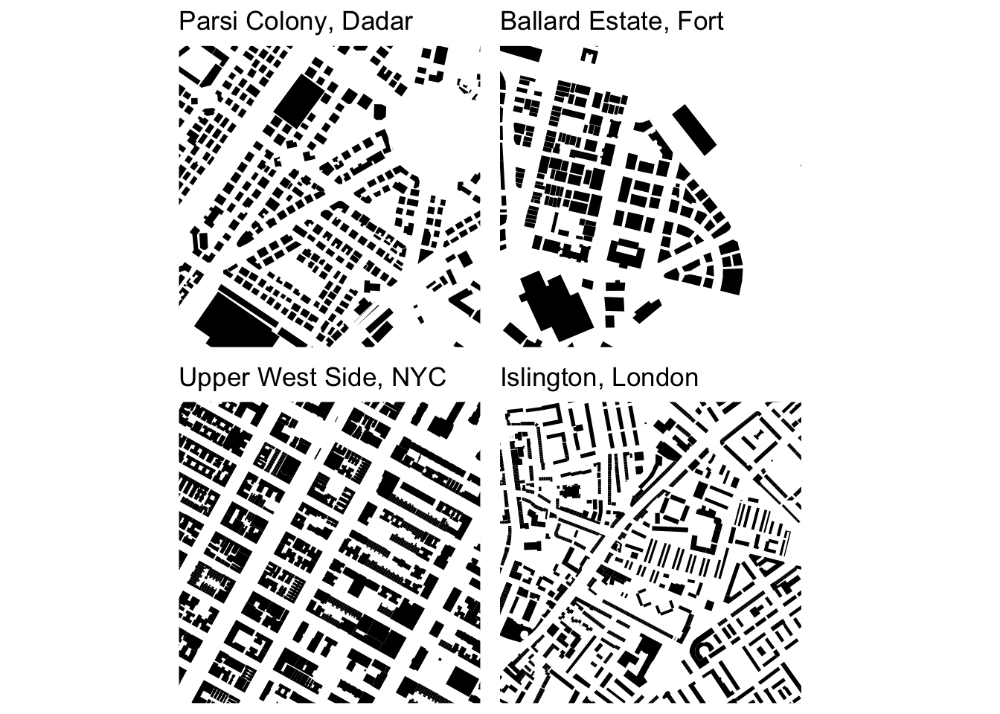
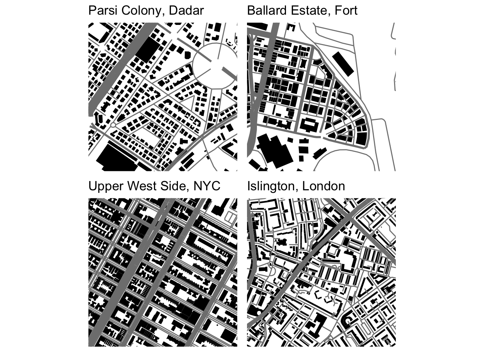

Learning about figure-ground diagrams
When I wrote my earlier posts on urban form schematics (see here and here), I was unaware that they are known as figure-ground diagrams - whose main purpose is to highlight built and unbuilt space. The contrast is also referred to as the mass vs. the void or, the figure vs. the ground. Only built structures are typically included resulting in a stark black and white schematic that allows for visual examination and qualitative bird’s eye analysis of urban form and structures. Note, I have reversed the colour scheme from my other posts to follow the common style of figure-ground diagrams.
Square mile comparisons of different urban areas (or the same area across time) features extensively in the book Great Streets by Allan Jacobs [1] according to [2] but I don’t know if this is a widely followed convention. Given the highly heterogenous urban mosaic of Mumbai, smaller areas are more meaningful as we can zoom into a consistently designed space. For this reason, I have maintained the 500m bounding box around a central coordinate like the previous posts.
Without the street network or parks coloured in, the urban fabric of Dadar Parsi Colony and Ballard Estate appear more similar to each other than to the examples from the Upper West Side and Islington. The famous blocks of New York City are a stark contrast to the more sinuous blocks of British (local and colonial) urbanism.

While the more conventional figure-ground diagram ignores the street network [3], the combination of streets and buildings offers more insights - especially when the street widths in the diagram are a tentative approximation of street importance [2]. For example, primary and trunk roads are given the largest widths followed by medium widths for secondary and tertiary roads and light lines for all others. This allows for qualitative analysis of urban mobility like walkability and connectivity overlaid with building densities of residence and / or commerce.

Once again, NYC is stark contrast to the examples of British urbanism where secondary or tertiary roads surround all blocks. In Islington and Dadar Parsi Colony, two residential neighbourhoods of British design, building blocks are mostly connected by residential roads with arterial connections at least 100m - 200m away. There is much to analyse and understand from these diagrams and I hope to return to them many times over as I fumble my way through the vast literature of urban morphology.
References
Credits
- Post photo is a figure-ground map of Giambattista Nolli’s 1748 “Pianta Grande di Roma” copied from https://morphocode.com/figure-ground-diagram/.